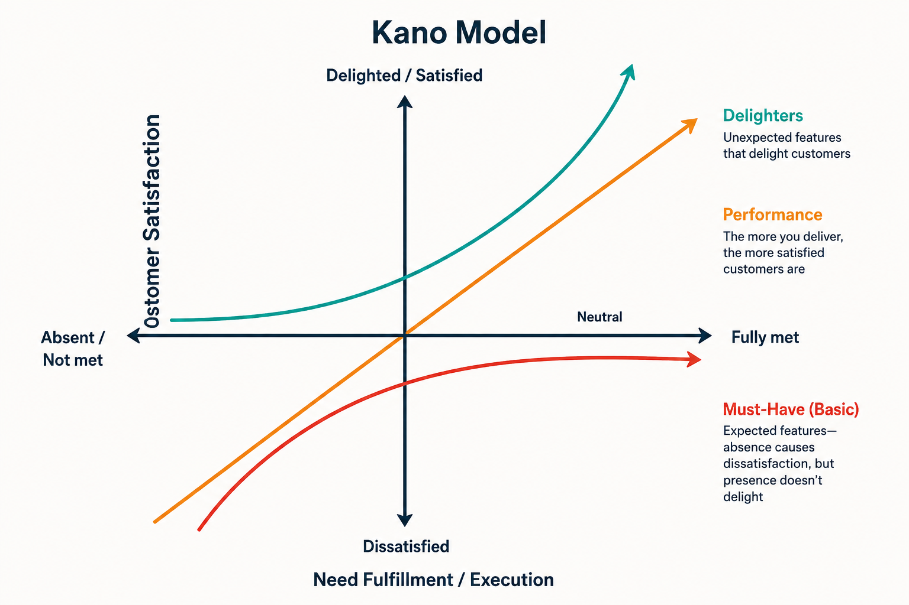
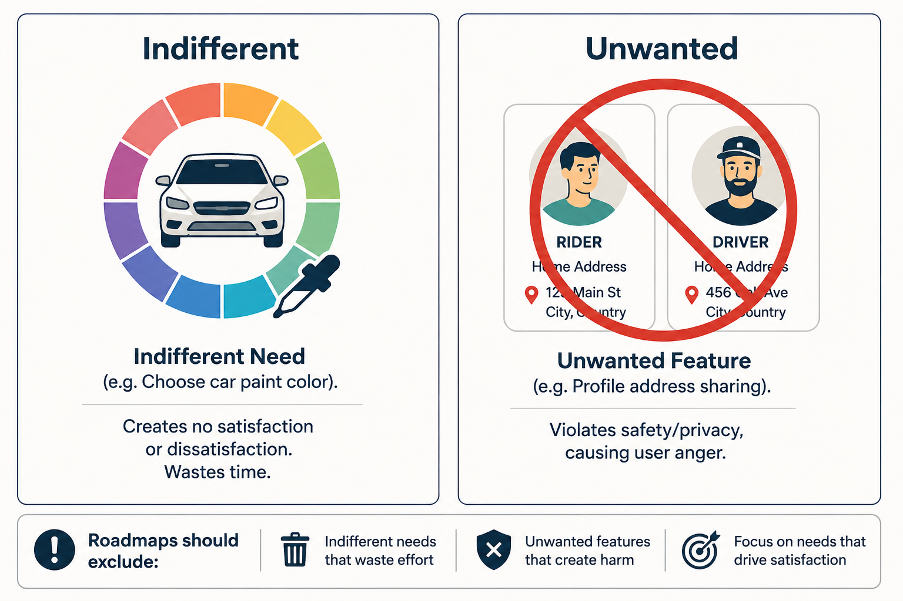
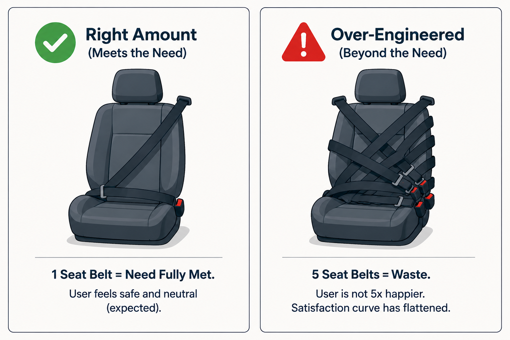
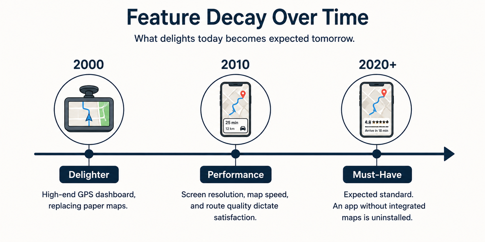
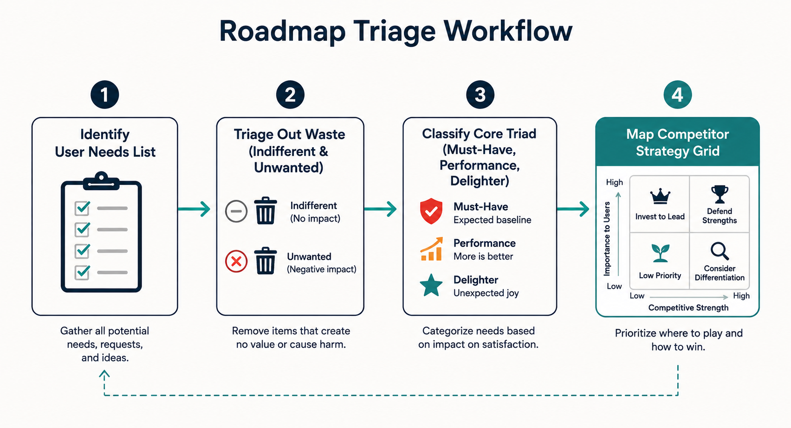

Your goal
Prioritize customer needs using the Kano Model, categorize features into must-haves, performance, and delighters, and identify temporal decay trends of customer expectations.
Lecture overview
Once a product team compiles a list of customer needs, they must decide which ones to prioritize with their limited resources. This lecture introduces the **Kano Model** as a prioritization framework.
Central argument
Product Managers must never treat all feature requests equally. To construct a viable roadmap, PMs must categorize needs using the Kano Model, filtering out wasteful indifferent features and dangerous unwanted features first. Successful execution requires delivering functional must-haves (which prevent dissatisfaction but do not increase delight) and scaling performance features linearly, while selectively introducing delighters to capture market share. Because customer expectations are dynamic, yesterday's delighters (like mobile GPS maps) inevitably decay into today's must-haves, requiring continuous strategic innovation.
1. What is the Kano Model?
Developed by Dr. Noriaki Kano, this quality-management framework maps customer sentiment on a grid. The **horizontal axis** represents need fulfillment/execution (Absent to Fully met). The **vertical axis** represents user satisfaction (Dissatisfied to Delighted).

24-kano-grid.png
Core Kano Model chart. Display must-have curve flattening below the neutral line, linear diagonal performance line, and top-right curve for delighters.
2. Roadmap Exclusions: Indifferent and Unwanted Needs
Two categories must be excluded from the roadmap. **Indifferent needs** represent useless waste that users do not care about (e.g. Uber car paint color). **Unwanted needs** represent active danger that users hate or fear, such as sharing rider/driver addresses (safety/privacy violation).

24-exclusions.png
Exclusions infographic. Shows a paint bucket color-picker representing indifferent features, and two address profile cards crossed out representing unwanted privacy features.
3. The Core Kano Categories: Must-Haves, Performance, and Delighters
The core triad curves define product strategy:
- Must-Haves: Basic expectations (table stakes) that cause extreme dissatisfaction if broken, but yield neutral satisfaction if met. More investment flattens out satisfaction.
- Performance: Linear features where satisfaction is directly proportional to execution (e.g., fuel efficiency, ETA speed).
- Delighters: Unexpected elements that drive customer delight if present, but cause no dissatisfaction if absent.

24-seatbelt-rule.png
Seat belt flattening comparison. Shows one functional seat belt (Need Met - Neutral/Expected) vs five seat belts on one seat (Over-engineered waste - no extra satisfaction).
4. The Dynamic Decay of Delighters
Expectations migrate downward over time. GPS navigation was a high-end **delighter** in 2000. By 2010, screen map response was a **performance** metric. Today, mobile GPS routing is an expected **must-have**; without it, mapping apps are uninstalled. Technology evolution continuously commoditizes innovation.

24-decay-timeline.png
Decay timeline showing arrow. In 2000, GPS is a Delighter. In 2010, it's a Performance metric. In 2020+, it's a Must-Have commodity.
Practical Product Management example
Situation
A PM at an email client startup is planning the next quarter's roadmap. The engineering team has proposed two major initiatives: Initiative A (Delighter)—an AI-powered email summary widget that drafts response templates; Initiative B (Must-Have)—resolving an active database bug that causes push notifications to drop 8% of incoming emails on mobile devices. The sales team is pushing hard for Initiative A because they believe the AI features will drive marketing buzz and attract new sign-ups.
Decision
The PM maps both initiatives on the Kano Model. Initiative A is a Delighter (unexpected, high satisfaction if present, but zero dissatisfaction if absent). Initiative B is a Must-Have (expected basic quality; dropping emails causes extreme dissatisfaction). The PM rejects the sales team's request to prioritize the AI widget and schedules Initiative B (fixing notification delivery) as the top priority.
Reasoning
According to the Kano Model, must-haves must be satisfied first. A broken must-have (dropped notifications/lost emails) creates massive customer dissatisfaction. Even if the team ships a state-of-the-art AI email summaries widget (delighter), it cannot compensate for a product that fails to deliver basic emails. Delight cannot exist on top of a broken foundation.
Consequence
The development team fixes the notification bug. Mobile churn rates drop by 22% over the next month. Once the basic must-have is stabilized, the PM allocates the next sprint to build a light version of the AI summary widget, which successfully wins positive reviews in industry tech blogs.
Transferable lesson
Always satisfy must-haves before investing in delighters. A product with delightful extras but broken basics will fail, as users will abandon it because of the frustration of unfulfilled core expectations.
Common misunderstandings
"Must-have features are where we should spend most of our marketing budget"
Correction: Must-haves are table stakes. Customers expect them and take them for granted. You do not win customers by marketing that your car has seat belts or that your email app sends emails. Spend marketing resources highlighting your performance metrics (faster compile times) and your unique delighters (AI integrations).
"Once a must-have feature is built, we should keep optimizing it"
Correction: Must-have satisfaction curves flatten out. Once a must-have is functional and meets the market standard, additional investment yields diminishing returns. Shift engineering capacity to performance features and delighters rather than over-engineering basic expectations once met.
"We should let customers vote on delighters"
Correction: Customers rarely ask for delighters because they do not know they are possible. If you ask customers what they want, they will request faster execution of existing features (performance) or basic missing items (must-haves). PMs must identify delighters through observation, customer empathy, and technological capability.
Key concepts and definitions
- Kano Model: A prioritization framework mapping Execution (X-axis) to Customer Satisfaction (Y-axis) to categorize user needs.
- Must-Have: A basic requirement that causes high dissatisfaction if missing, but yields neutral satisfaction if present.
- Performance Feature: A feature where customer satisfaction scales in a direct, linear relationship with the level of execution.
- Delighter: An unexpected feature that generates high satisfaction if present, but causes no dissatisfaction if absent.
- Indifferent Need: A feature that the user does not care about, representing waste that should be excluded from the roadmap.
- Unwanted Feature: A feature that users actively dislike or fear (such as privacy violations), which must be excluded.
- Delighter Decay: The natural temporal migration of features moving from Delighters down to must-haves over time.
Key takeaways
- Prioritize needs using Kano to prevent treating all roadmap requests as having equal value.
- Filter out Indifferent and Unwanted needs first to protect development resources and protect customer trust.
- Must-haves are essential table stakes; they must work perfectly to prevent customer dissatisfaction.
- Must-have satisfaction curves flatten; do not waste resources over-engineering basic expectations once met.
- Performance features scale linearly; invest in them to deliver proportionate increases in customer value.
- Delighters are unexpected value-adds; they drive marketing buzz and customer delight.
- Yesterday's delighters become today's must-haves; the decay of delighters requires continuous product innovation.
- Uber's visual map was a 2009 delighter; today, it is a must-have table stake for any ride-sharing platform.
Visual summary

24-visual-summary.png
Flowchart display: identify need, route through triage filters (Indifferent/Unwanted), map remaining into Kano Triad curves, showing Delighter decay migration path.
One-minute review
Cover the Basics: Fix must-haves first. If seat belts are missing, a passenger does not care if the car has a cooler in the back. Scale the Performance: Invest in performance features where execution linearly increases satisfaction (speed, efficiency). Innovate to Delight: Deliver unexpected delighters to stand out, but remember they will decay into must-haves over time.
Interactive Practice
Decompose user needs using the Kano Model categories. Select each tab below to view descriptions and Uber examples.
Must-Have (Table Stakes)
Definition: Minimum requirements. Customer takes them for granted. Missing causes extreme anger, but present adds zero extra satisfaction.
Uber Example: Functional seat belts inside the vehicle.
Performance (Linear Feature)
Definition: Satisfaction increases in direct proportion to execution (linear scaling).
Uber Example: ETA arrival accuracy, vehicle fuel efficiency, ride price discount.
Delighter (Attractive Quality)
Definition: Unexpected features that generate delight if present, but cause no dissatisfaction if missing.
Uber Example: Visual car tracking map when launched in 2009.
Indifferent (Waste)
Definition: Customer does not care. Added code yields no value but consumes engineering resources.
Uber Example: Letting riders choose driver car paint color.
Unwanted (Danger)
Definition: Feature actively disliked by users. Causes privacy leaks or safety risks.
Uber Example: Displaying rider marital status publicly on profile headers.
Triage backlog items using the Kano Model. Select the correct category for each feature proposal.